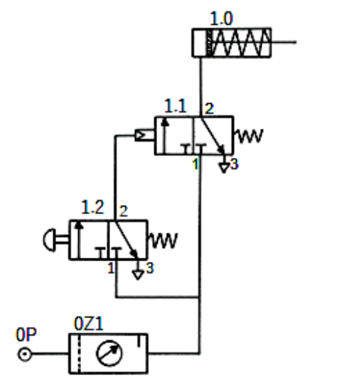

PAU 2026 · Tecnología e Ingeniería II · UCLM · Modelo A
Modelo orientativo del curso 2025/26. La prueba consta de 4 ejercicios de 2,5 puntos; en los ejercicios 1, 2 y 3 se elige una de las dos opciones (a o b) y el ejercicio 4 es obligatorio. Aquí se resuelven todas las opciones con el enunciado oficial, los conceptos aplicados y la solución paso a paso.
Ejercicio 1 · Neumática
Prensa neumática con cilindro de doble efecto e identificación de un circuito neumático.
Ejercicio 2 · Sistemas de control
Señal Y = f(X) con comparador y actuador, y función de transferencia + estabilidad de un lazo.
Ejercicio 4 · Dureza Brinell (ejes)
Control de calidad por dureza Brinell de ejes de transmisión y análisis de la huella.
📄 Enunciado
Se diseña una prensa neumática con un cilindro de doble efecto para compactar material. El cilindro tiene: diámetro de émbolo 12 cm, diámetro de vástago 4 cm, carrera 50 cm y rendimiento del 90 %. El sistema trabaja a 6 bar y realiza 80 ciclos por hora (compresión y liberación). Se pide:
- Calcular la fuerza máxima de avance (en N) y la fuerza máxima de retorno (en N). (1 punto)
- Determinar el consumo de aire de la instalación en condiciones normales (en m³/h). (1 punto)
- Calcular el trabajo realizado en la carrera de avance. (0,5 puntos)
💡 ¿Qué vamos a aplicar?
En el avance la presión actúa sobre toda el área del émbolo \(A_1=\pi D^2/4\); en el retorno, sobre el área anular \(A_2=A_1-A_v\) (descontando el vástago). La fuerza útil es \(F=p\,A\,\eta\). El consumo de aire a condiciones normales es el volumen barrido (avance + retorno) multiplicado por la relación de compresión \((p_{man}+1)/1\) y por los ciclos.
a) Fuerzas de avance y retorno
b) Consumo de aire (condiciones normales)
Volumen barrido por ciclo (avance + retorno) a la presión de trabajo:
Multiplicado por la relación de compresión \((6+1)/1=7\) y por los 80 ciclos/h:
c) Trabajo en la carrera de avance
📄 Enunciado
Dado el siguiente circuito neumático, responde:
- Nombra los elementos que forman el circuito neumático. En las válvulas distribuidoras indica qué tipo de accionamiento y retorno tienen. (1 punto)
- Explica su funcionamiento. (1,5 puntos)

💡 ¿Qué vamos a aplicar?
Hay que reconocer la simbología neumática (norma ISO 1219): el actuador (cilindro), las válvulas distribuidoras 3/2 con su accionamiento y retorno, y la unidad de acondicionamiento del aire; después se razona la lógica de mando (mando indirecto o pilotado).
a) Elementos del circuito
- 1.0 · Cilindro de simple efecto con retorno por muelle. Es el actuador: el aire a presión lo hace avanzar y el muelle lo devuelve a su posición inicial.
- 1.1 · Válvula distribuidora 3/2 (3 vías, 2 posiciones), normalmente cerrada, con accionamiento neumático (pilotada) y retorno por muelle. Es la válvula de potencia que alimenta el cilindro; se pilota con la señal que llega de 1.2.
- 1.2 · Válvula distribuidora 3/2 (3 vías, 2 posiciones), normalmente cerrada, con accionamiento manual por pulsador y retorno por muelle. Es la válvula de mando.
- 0Z1 · Unidad de mantenimiento (filtro-regulador con manómetro) que acondiciona el aire.
- 0P · Toma de aire comprimido (fuente de energía).
b) Funcionamiento
Es un mando indirecto. El aire llega desde la toma 0P a través de la unidad de mantenimiento 0Z1. Al pulsar la válvula 1.2, ésta deja pasar aire que pilota la válvula 1.1; la 1.1 conmuta y envía aire a la cámara del cilindro 1.0, que avanza comprimiendo el material.
Al soltar el pulsador, el muelle de 1.2 la devuelve a su posición de reposo, cesa el pilotaje y el muelle de 1.1 la recoloca, comunicando la cámara del cilindro con el escape (vía 3). El muelle del cilindro 1.0 lo hace retroceder a la posición inicial.
📄 Enunciado
En la figura se muestra un sistema de control de una variable física X con una red de amplificación, un comparador y un actuador. La señal intermedia Y depende de X. El comparador cumple:
El actuador se activa con nivel alto (S = 1).
- Obtenga la expresión de la señal Y = f(X). (1,5 puntos)
- Determine el rango de valores de X para los cuales se activa el actuador. (1 punto)
💡 ¿Qué vamos a aplicar?
Se plantean las ecuaciones de los dos sumadores del lazo: la realimentación unitaria de Y al primer sumador y la de ganancia 2 al segundo. Con el bloque de ganancia 3 se despeja Y = f(X). El actuador se activa cuando el comparador da S = 1, es decir cuando Y < 5.
a) Expresión de Y = f(X)
Sea \(v_1\) la salida del primer sumador y \(v_2\) la del segundo:
b) Rango de X que activa el actuador
El actuador se activa con S = 1, es decir con Y < 5:
📄 Enunciado
Para el sistema de la figura:
- Obtener la función de transferencia del sistema. (1 punto)
- Determina si el sistema de control es estable averiguando los polos del sistema. (1,5 puntos)
💡 ¿Qué vamos a aplicar?
Con realimentación unitaria negativa, la función de transferencia en lazo cerrado es \(\dfrac{C}{R}=\dfrac{G}{1+G}\). Los polos son las raíces del denominador; el sistema es estable si todos tienen parte real negativa.
a) Función de transferencia en lazo cerrado
Con \(G(s)=\dfrac{500}{(s+1)(s+4)}\) y realimentación unitaria:
b) Polos y estabilidad
La ecuación característica es \(s^2+5s+504=0\):
Ambos polos tienen parte real negativa (−2,5):
📄 Enunciado
Una bomba de calor funciona según el ciclo de Carnot. Extrae calor del exterior, que está a 5 ºC, y lo cede al interior de una vivienda que se mantiene a 25 ºC. La bomba suministra calor a un ritmo de 36 000 kJ/h. Calcula:
- Rendimiento (COP) de la bomba de calor. (1 punto)
- Trabajo realizado por la bomba de calor en 1 hora. (1 punto)
- Potencia del motor de la bomba de calor. (0,5 puntos)
💡 ¿Qué vamos a aplicar?
En una bomba de calor, el COP relaciona el calor cedido al foco caliente con el trabajo: \(COP=\dfrac{T_c}{T_c-T_f}\) (Carnot). El trabajo es \(W=Q_c/COP\) y la potencia \(P=W/t\). Temperaturas: 25 ºC = 298 K (interior), 5 ºC = 278 K (exterior).
a) COP de la bomba de calor
b) Trabajo en 1 hora
c) Potencia del motor
📄 Enunciado
Un motor térmico funciona entre una fuente caliente a 600 K y una fuente fría a 300 K. Consume 2,5 kg/h de combustible con un poder calorífico de 40 000 kJ/kg. El motor tiene un rendimiento real del 40 % del rendimiento de Carnot. Calcula:
- El rendimiento de Carnot y el rendimiento real del motor. (1 punto)
- El calor útil desarrollado. (1 punto)
- La potencia útil en W. (0,5 puntos)
💡 ¿Qué vamos a aplicar?
El rendimiento de Carnot es \(\eta_C=1-\dfrac{T_f}{T_c}\). El calor aportado por hora es \(Q_1=\dot m\cdot PC\). El trabajo (calor útil) es \(W=\eta_{real}\,Q_1\) y la potencia \(P=W/t\).
a) Rendimientos
b) Calor útil desarrollado
Calor aportado por el combustible en 1 h: \(Q_1=2{,}5\cdot 40\,000=100\,000\ \mathrm{kJ}\).
c) Potencia útil
📄 Enunciado
Una empresa de Toledo produce ejes de transmisión para maquinaria industrial pesada. En el control de calidad se realiza un ensayo de dureza Brinell con una bola de acero durante 45 s. El diámetro de la bola es 10 mm y la constante del ensayo es k = 30. Se mide una huella de diámetro medio d = 4 mm. Los ejes son aptos si su dureza está entre 200 HB y 300 HB. Se pide:
- Calcula la carga aplicada durante el ensayo y la dureza Brinell del material del eje. (1,5 puntos)
- Expresa la dureza Brinell de forma normalizada e indica si estos ejes son adecuados. (0,5 puntos)
- Explica matemáticamente cómo afectaría un aumento del diámetro de la huella al valor de la dureza. (0,5 puntos)
💡 ¿Qué vamos a aplicar?
La carga se fija con la constante del ensayo: \(F=k\,D^2\). La dureza Brinell es \(HB=\dfrac{2F}{\pi D\left(D-\sqrt{D^2-d^2}\right)}\), con d el diámetro de la huella.
a) Carga aplicada y dureza Brinell
b) Expresión normalizada y aptitud
Con D = 10 mm, F = 3000 kp y t = 45 s:
c) Efecto de un aumento del diámetro de la huella
Si d aumenta, el radical \(\sqrt{D^2-d^2}\) disminuye, con lo que el paréntesis \((D-\sqrt{D^2-d^2})\) aumenta y, al estar en el denominador, la dureza HB disminuye.